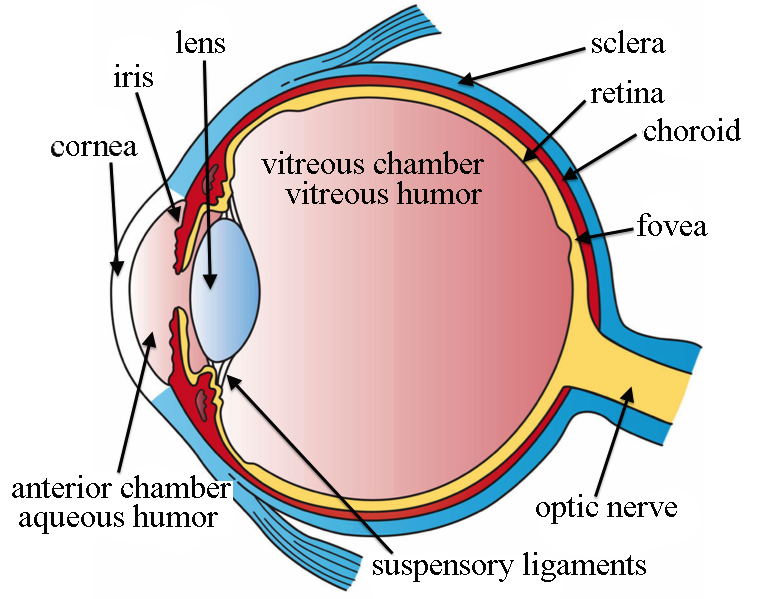
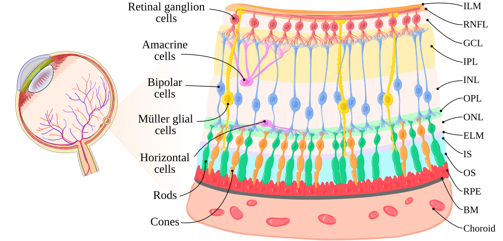
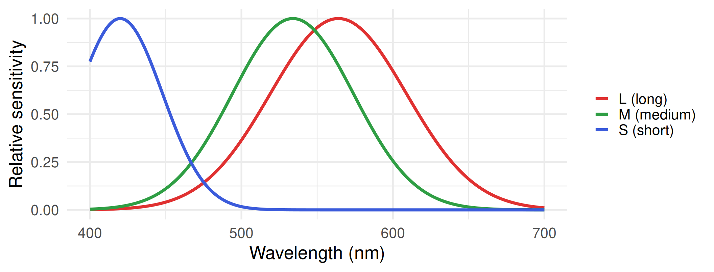
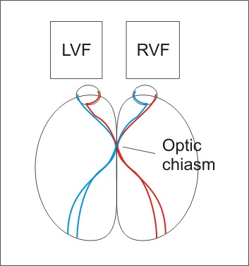
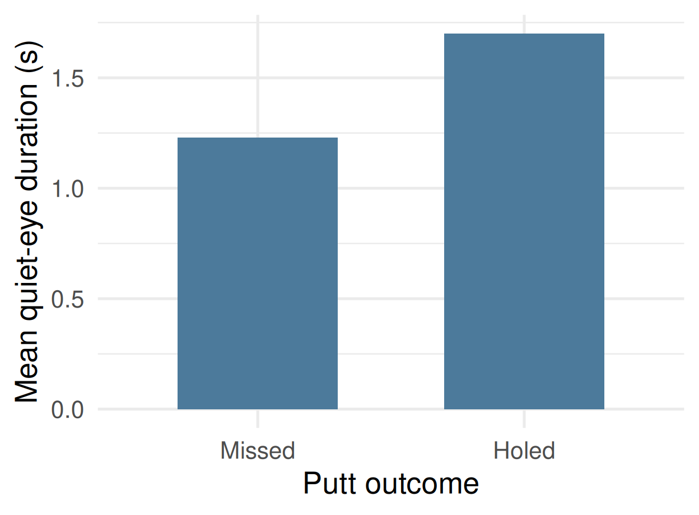

Foundations of perception
Get these slides:
Dr Germano Gallicchio
Lecturer in Computational Psychophysiology
School of Sport Science, Bangor University, UK
On a computer press F11 to de/activate full-screen view.
For smartphone view and for pdf document: use “learning resources” link above.
Agenda
The class data: an unexpected result
Sensation and perception
The eye
From the eye to the cortex
Perception as construction
Perception in sport
Review
The class data
In the practical, every element labelled B was compared with an element labelled A, which was assigned a value of 100.
- In the Müller-Lyer, Ebbinghaus and Ponzo figures, A and B were identical.
- In the control figure, B was 10% longer than A.
The class estimates were systematically biased for the three illusions, and the bias persisted after the true values had been disclosed.
This session examines how a physical stimulus becomes a percept, and why the two don’t always correspond.
Switch to the Week 4 workbook, Charts sheet: mean illusion score per figure, block 1 vs block 2. Then return. Do not explain the illusions yet; that is Part 5.
Sensation and perception
Sensation: the detection of physical energy by specialised receptors and its transduction into electrochemical signals.
Perception: the interpretation of those signals by the brain, yielding an experience of objects and events.
From receptor to cortex
Receptors are specialised cells that perform sensory transduction.
The resulting signal travels along sensory nerves.
For most senses, the signal is relayed through the thalamus, a subcortical structure.
It then reaches specialised areas of the cerebral cortex, where perception takes place.
Olfaction is an exception: olfactory signals reach the cortex without first passing through the thalamus.
The senses
| Sense | Energy detected |
|---|---|
| Vision | light (electromagnetic) |
| Touch (somatosensation) | pressure, vibration, temperature |
| Hearing (audition) | sound (mechanical vibration) |
| Taste (gustation) | chemical |
| Smell (olfaction) | chemical |
A sixth sense of particular relevance to sport: proprioception (kinaesthesia), the sense of the position and movement of the body.
Functions of the sensory systems
Detection of the external environment
Detection of the internal state of the body
Triggering and guiding action
Protection from harm
Feedback on the outcome of one’s own actions
Communication
Is colour a property of the object?
The surface of the mug absorbs most wavelengths of light and reflects wavelengths of approximately 650 nm.
“Red” is not a property of those wavelengths; it is the brain’s interpretation of the signal they evoke.
Colour is a perceptual property: it exists in the observer, not in the object.
Image formation

Light enters through the pupil, the aperture in the centre of the iris.
It is focused by the cornea and the lens onto the retina, at the back of the eye.
The retinal image is inverted: the left of the visual scene falls on the right of the retina, and the top falls on the bottom.
The retina

The retina is organised in layers. The photoreceptors lie at the back, furthest from incoming light.
Photoreceptors pass signals to bipolar cells, which pass them to ganglion cells.
The axons of the ganglion cells converge to form the optic nerve.
Rods and cones
Rods
- approximately 120 million per retina
- most numerous in the periphery; absent from the fovea
- sensitive to dim light; specialised for night vision
- achromatic
- low acuity
Cones
- approximately 6 million per retina
- concentrated in the fovea
- require brighter light; specialised for day vision
- support colour vision
- high acuity
Although outnumbered, cones provide a large majority of the input reaching the brain.
Colour vision

Schematic: approximate peak sensitivities of the three human cone types. Colour is computed by comparing their relative activity.
The fovea
A small depression at the centre of the retina, densely packed with cones.
Largely free of overlying cells and blood vessels, which allows high acuity.
Demonstration. Extend one arm and raise a thumb. Fixate the thumbnail.
The region of high-acuity foveal vision is approximately the size of the thumbnail at arm’s length. Everything else in view is processed by lower-acuity peripheral vision.
Foveal and peripheral vision
| Characteristic | Foveal vision | Peripheral vision |
|---|---|---|
| Receptors | cones only | proportion of rods increases with eccentricity |
| Convergence of input | each ganglion cell receives input from very few cones | each ganglion cell receives input from many receptors |
| Sensitivity to dim light | poor | good |
| Sensitivity to detail | high | low |
| Colour vision | good | poor |
Acuity depends on convergence: when many receptors share one ganglion cell, the brain cannot tell which of them was stimulated.
The blind spot
The optic nerve leaves the eye at a point that contains no receptors.
Demonstration (on a phone or laptop screen). Close the left eye. Fixate the X with the right eye. Move the screen slowly towards and away from the face. At one distance the disc disappears.
No gap is noticed in everyday vision: the brain fills in the missing region from the surrounding information.
Questions for discussion
Why is bright light helpful when reading?
Nocturnal animals see well in the dark. Do they rely more on rods or on cones?
A faint star can be visible in peripheral vision yet disappear when fixated directly. Why?
Is foveal or peripheral vision more important in sport?
The visual pathway
At the optic chiasm, axons from the nasal half of each retina cross to the opposite side; axons from the temporal half do not.
As a result, each visual hemifield is processed by the contralateral hemisphere.
Visual fields

The left visual hemifield projects onto the right half of each retina, and is processed by the right hemisphere.
The right visual hemifield projects onto the left half of each retina, and is processed by the left hemisphere.
Hierarchical processing
Visual information is processed in successive stages.
Neurons in early stages (e.g., V1, Broadmann area 17) respond most strongly to simple features: lines and edges at particular orientations.
Neurons in later stages respond to increasingly complex properties: motion, colour, objects, faces.
Each stage combines the output of the previous one. Perception is the product of the whole sequence, not of the retina alone.
Bottom-up and top-down processing
Bottom-up (data-driven): perception built from the sensory input.
Top-down (conceptually driven): perception shaped by expectations, prior knowledge and context.
Visual illusions reveal top-down processing: identical sensory input yields different percepts depending on context.
The Müller-Lyer illusion
The two shafts are identical in length; B is typically perceived as longer.
One influential account (Gregory, 1963) proposes that the fins act as depth cues, similar to the edges of a corner, and that the brain applies size constancy inappropriately.
This account is debated, and several alternative explanations exist.
The Ebbinghaus and Ponzo illusions
The central circles are identical. Size is judged relative to the surrounding context.
The bars are identical. Converging lines are interpreted as receding in depth, so the upper bar is perceived as further away and therefore larger.
Knowledge does not correct the percept
In block 2, the class knew that the elements were identical. The bias nevertheless persisted.
Perceptual processes operate largely independently of explicit knowledge.
Implication for sport. An athlete who knows a perception to be inaccurate may still be unable to perceive otherwise; training must target perception directly.
Show the block 1 vs block 2 chart again here.
An application: illusions and putting
Witt, Linkenauger and Proffitt (2012) surrounded a golf hole with projected circles, forming an Ebbinghaus configuration.
When small surrounding circles made the hole appear larger, participants putted more successfully than when large circles made it appear smaller.
The finding suggests that a perceptual manipulation can alter motor performance. It should be regarded as an initial finding: subsequent replication attempts have produced mixed results.
Witt, J. K., Linkenauger, S. A., & Proffitt, D. R. (2012). Get me out of this slump! Visual illusions improve sports performance. Psychological Science, 23(4), 397–399.
Anticipation from early cues
https://www.youtube.com/watch?v=t03LHpeWnpA
The lights are extinguished as the ball is delivered, yet contact is still made. Skilled performers extract information from the movement of the opponent before the ball is in flight, and use it to predict the outcome.
Expert gaze: the quiet eye
Definition (Vickers, 1992): the final fixation on a specific location or object before the initiation of a movement.
Measured as a duration (ms), from onset (before movement initiation) to offset (when gaze leaves the location).
Findings widely reported in the literature:
- experts exhibit longer quiet-eye durations than novices;
- quiet-eye durations are longer before successful than unsuccessful performance;
- the quiet eye can be trained.
Vickers, J. N. (1992). Gaze control in putting. Perception, 21(1), 117–132. https://doi.org/10.1068/p210117
Wilson and Pearcy (2009)
- 6 participants
- Golf putting on flat and sloped surfaces
- Gaze recorded with an eye tracker

Quiet-eye durations were longer before holed than before missed putts.
Wilson, M. R., & Pearcy, R. C. (2009). Visuomotor control of straight and breaking golf putts. Perceptual and Motor Skills, 109(2), 555–562. https://doi.org/10.2466/pms.109.2.555-562
From perception to attention
The quiet eye concerns where gaze is directed and for how long.
The direction of gaze is one form of attention: the selection of some information for further processing at the expense of other information.
Review questions
Distinguish sensation from perception, with reference to transduction.
Explain why foveal vision has higher acuity than peripheral vision.
Why is a faint star more visible in peripheral than in central vision?
Explain why the class’s illusion bias persisted after the true values had been disclosed.
Review (MCQs 1)
- The conversion of physical energy into electrochemical signals by receptors is called:
perception
transduction
convergence
accommodation
correct answer: B
Review (MCQs 2)
- Which statement about cones is correct?
They are most numerous in the periphery of the retina
They are specialised for vision in dim light
They are concentrated in the fovea and support colour vision
They are absent from the fovea
correct answer: C
Review (MCQs 3)
- The blind spot exists because:
the fovea contains no cones
the optic nerve leaves the eye at a point without receptors
rods do not respond to bright light
the lens inverts the retinal image
correct answer: B
Review (MCQs 4)
- Information from the left visual hemifield is processed mainly by:
the left hemisphere
the right hemisphere
both hemispheres equally
the superior colliculus only
correct answer: B
Review (MCQs 5)
- The persistence of a visual illusion after the observer has been told the true sizes indicates that:
perception depends only on bottom-up processing
perception operates largely independently of explicit knowledge
the observer was not paying attention
the illusion is caused by the lens of the eye
correct answer: B
Review (MCQs 6)
- The quiet eye is defined as:
the period during which the eyes are closed before a movement
the final fixation on a specific location or object before the initiation of a movement
the number of saccades made during a movement
the time taken to react to a visual stimulus
correct answer: B
Optional: the law of specific nerve energies
Each sensory nerve conveys only one type of information, whatever the stimulus that activates it (Müller, 1838).
Activity in the optic nerve is experienced as light, even when caused by pressure on the eyeball.
The quality of a sensation therefore depends on which pathway is active, not on the energy that activated it.
Optional: dorsal and ventral streams
Beyond V1, visual processing divides into two broad pathways.
The ventral stream (towards the temporal lobe) supports the recognition of objects: “what”.
The dorsal stream (towards the parietal lobe) supports spatial processing and the visual guidance of action: “where” or “how”.
The dorsal stream is particularly relevant to sport, in which visual information must be translated rapidly into movement.